本次ChinaVis挑战赛于7月21-24日在成都举行，由于本人家住成都较近的原因很荣幸能够报名并参加了这次挑战赛会议，期间有各行业的大佬做可视化的前沿发展汇报及最新论文汇报，让我收获颇丰，其详情请关注ChinaVis2019可视化官网。本篇博客主要用来总结本人本次与同学共同参加并完成挑战赛题目的收获与不足，以及参会时记录的挑战赛1的答案详情、听取到的其他获奖作品后的感想，以备自己今后参考所用。
参赛感想
我们团队作为第一次参加该比赛的新人来说，仅仅在挑战赛1中获得了优秀奖，虽然谈不上太差但却有很多在做比赛时的不足之处值得我好好思考，在做比赛时我们遇到的主要问题我归纳了有以下：
1）花的时间太少：由于我们团队都是今年的本科毕业生，要一边做毕业设计一边做比赛，最终导致真正花在做比赛上的时间实际只有10天左右。在参会时，我与其他获奖的参赛队伍交流后得知，他们的平均用时都在30天左右甚至更多。（可能对于真正的大佬来说时间根本不是问题，但对于我们这种水平的队来说多一些时间还是挺重要的）。
2）不应该最后才写论文和答卷：我认为我们这次最大的失误就是临到交卷的前一天晚上才开始写论文和答卷（实际上其过程说是在凑比较准确一点)，在写的过程中遇到各种各样的问题，很多之前在做系统和分析数据时看似好像已经分析出的东西在写答卷时又变得不清晰和无从下手。所以，我认为应该一边做系统一边写答卷。
3）没有针对挑战赛给出的问题有针对性的设计和作答：刚开始我们就是在从整体的角度去设计这个系统要做成怎么怎么样，怎样才能吸引专家眼球之类的，然后就是从别人历年发表过的可视化文章中去找我们可能能用到的可视化图形，但却忽略了问题本身。这样做，到最后写答卷时导致的结果就是，你会发现其实你每个问题感觉都有所涉及，但又每个问题你都没有解决。就比如在我们系统中的“场馆时间安排图”——能够勉强说明场馆的开会的时间段，但别人问题问的是让你找出每个场馆的时间安排，这包括大致的开会时间和会议名称；再比如“人员的分类”——勉强能把不同类型的人员聚类（精不精确先不说），但却不能说明每一类都是什么人。当然从做可视化的角度来说这样做无可厚非，但是我们是在比赛啊。我认为一开始就应该针对每个问题去寻找可以有效解决问题的方法不管是通过后端数据处理得到还是前端可视化图形得到，这样才能既节约时间由能有效的解答问题。
4）应该在答卷中尽可能多的写出自己分析的结果：在写答卷时，因为比较匆忙，所以只把自己觉得正确的地方写上去了很多之前分析出的一些较小或则与答案有关的结果并没有写上，且做出的场馆拥堵情况热力图和人员脸谱图因为没有实现联动而在没有在答卷中出现。最后在参会听老师公布答案时发现，我们分析出的很多小细节都与答案有关，我想如果把这些都写上我们的名次应该可以再上一个档次。
5）图与图之间的搭配问题：某些用于解决某问题的图搭配起来实际不能真正的解决该问题，这也是我们在设计之初考虑不周的结果，由此导致花费了时间在制作可视化的图形上，所以在设计之初我们应该想好了设计出的图形搭配起来是否能真正解决问题而不要盲目的开始制作图形。
以上就是我总结出的在本次比赛中的不足之处，下面附上我们团队做出的系统中的部分系统截图：
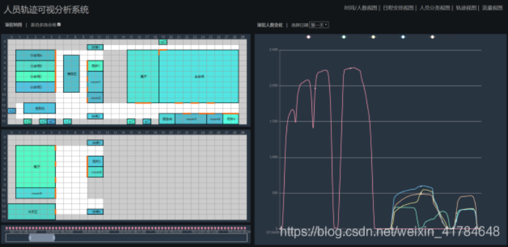
点击每个会场房间可单独显示每个房间的人数变化的折线图，用于详细探索某个会场或某个格子在此时间段的人员数量变化情况。同时选择多个会场，可同时在同一坐标下显示多个房间人数变化情况，以便我们对每个会场做对比分析。
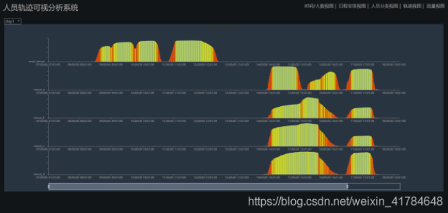
该视图着重观察主会场以及四个分会场随时间的人数变化以及稳定度变化（出度人数除以入度人数），借此来判断该会场是否存在人数庞大的时间段或者人员流动比较频繁的时间段，推测此会场是否在举行会议或者比赛等活动。其中，黄色颜色越深代表着会场人员变动频率越高说明属于休会时段，颜色越前表示会场人员走动越低说明处于开会时间段。
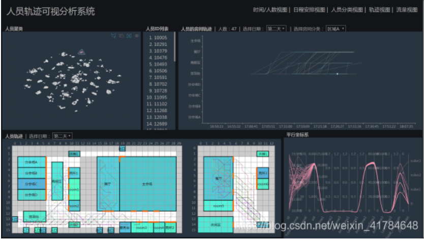
对上面经过t-sne聚类后的人员进行圈选可以查看该类人员的轨迹。点击每个聚类好的小团会在场地图中弹出该类人员的行走路线，且在折线图中显示该类人员中去过各房间的差异，从而帮助分析人员类别。
挑战赛部分答案记录
由于赛方已将答案以及切入点以表格的形式完整的在PPT上展示了，在此我就不过多赘述，有需要的请观看我在现场拍摄答案图片。
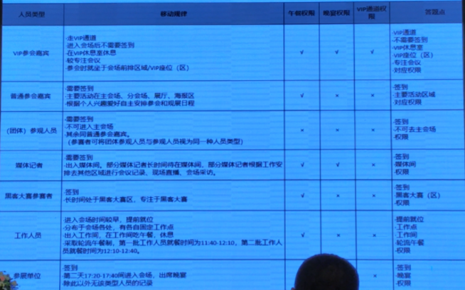
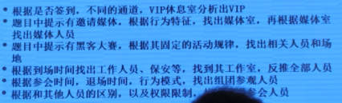
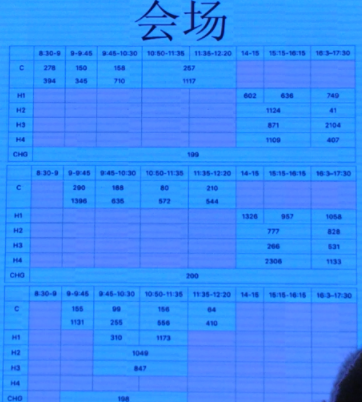
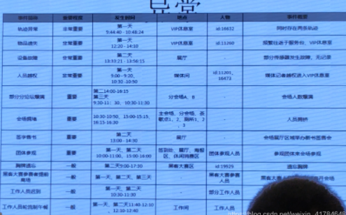
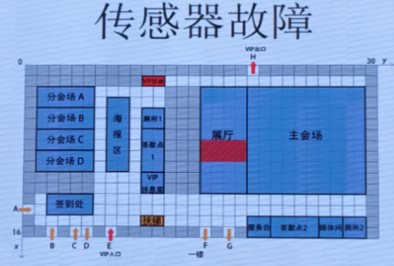
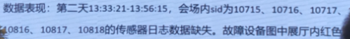
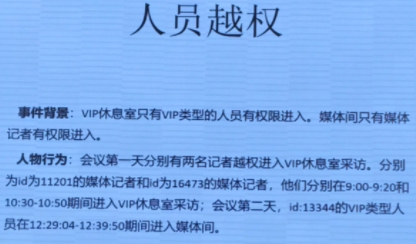
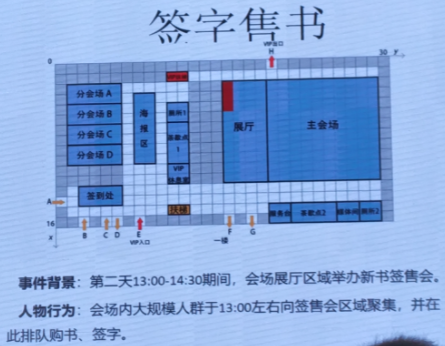
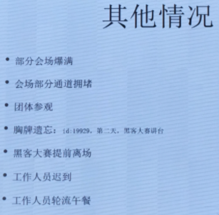
备注：会场的安排包括会场的会议时间和会议名称，我只拍到了时间安排没有拍到每个房间不同时间段对应的会议名称，所以需要详细资料的可以等一段时间去官网下载详细答案。
挑战1获奖作品记录及感想
一等奖，成都理工大学-李浙川
所用开发工具：Echarts，D3.js，Tableau，Layui，Python，Excel
成都理工大学队的作品被挑战赛评议委员会认为是本次赛事中分析结果最全、结果与答案最为接近的作品。在作品中并未涉及到什么算法和高大上的可视化技术却利用现有的工具将设计出的图形相互搭配完美的解决了挑战1的各问题。以下是他们设计的部分可视化界面以及简要说明。
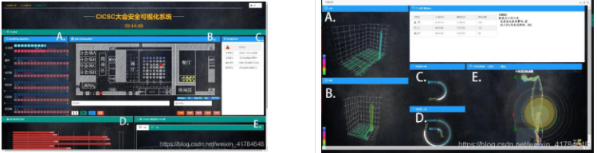
左图 ：A 部分为会场实时人数、人员密度统计条形 图；B 部分为实时会场动态展示图；C 部分为会场异常情况通报栏；D 部分
为该异常事件具体情况展示栏；E 部分为会场人数情况热力图
右图：AB 两部分为该 id 的一二楼该天停留情况热力图；CD 两部分为该 id 一二楼重要地点的具体停留时间和弦图；E 图为该
id 三天具体移动轨迹展示图
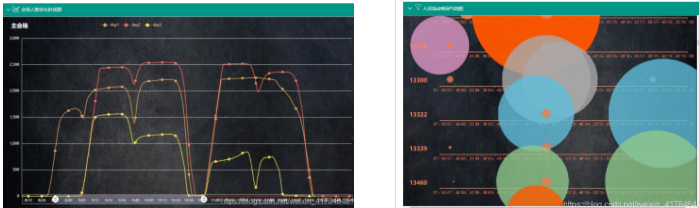
左图：在折线图中梯度下降和梯度上升的情况判断出各会场会议的起止时间，其中以会场人数跃进式上升为会议的开始标志，会场人数断崖式下降为会议的结束标志，进而得出每个会场的会议安排表
右图：工作人员流动情况气泡图(其中蓝色代表服务台，灰色代表签到处，绿色代表展厅)
盗用胸牌16632：通过发现在某一时刻同时出现两个编号相同的胸牌
一等奖，重庆大学
处理数据前对数据进行了补全再做处理
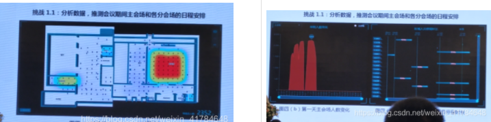
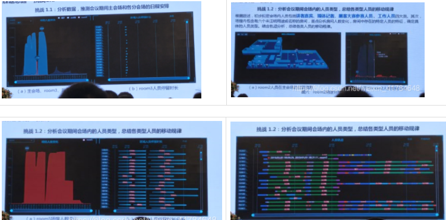
记者越权：切入点，先分析出可进VIP房间的人不用签到但该人进入VIP房间签到
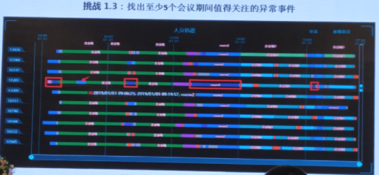
当然作为一等奖的获得者他们也分析出了盗用胸牌者，不过他们找到该盗用ID是：发现使用该ID的人员瞬移并跳格，然后深入分析发现原因不是瞬移跳格，而是有人复制胸牌导致很短的时间内有同样ID的人在不同的两个地方出现。（顺便说一句，当时我们团队也发现了这个人，且发现他的原因也是他出现瞬移的情况，但我们没有进行深入分析，而只是把他当做传感器故障时间处理了，哎。。。可能这就是一等奖和优秀之间的差距吧）。
二等奖，东北师范大学
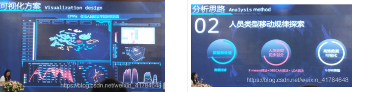
人员分类：t-sne+圈选平行坐标图
先分类->预设->t-sne降维算法
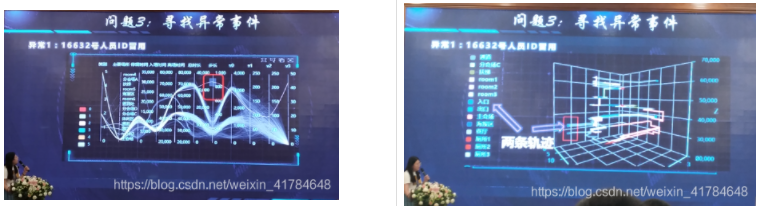
冒用：同时两条轨迹
传感器出错：由一人异常->深入察看->某段某时，传感器失灵
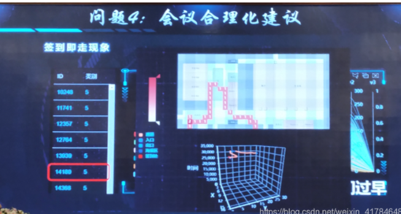
二等奖，山东大学

用到的技术 ：D3.js AntVG2 Vega Echarts
右图右侧决定树：用于展示全场分类
二等奖，信息工程大学
虚幻引擎（咱也不知道啥是虚幻引擎，只知道主持人赵颖老师说这是本次比赛中用到最牛技术的获奖作品o(╥﹏╥)o）不懂所以我就不敢乱逼逼，有兴趣的可以看以下我拍摄的演讲人的报告PPT，以及该作品作者的联系方式。
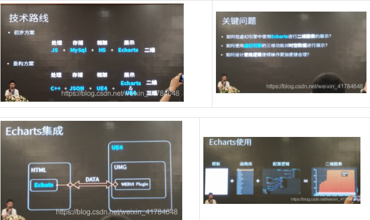
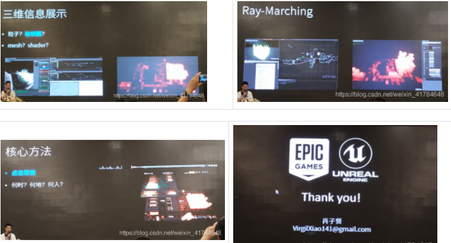
二等奖，燕山大学
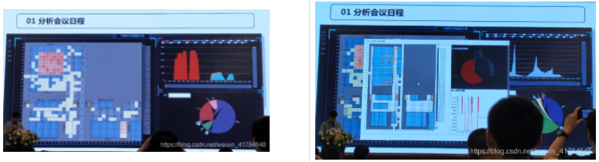
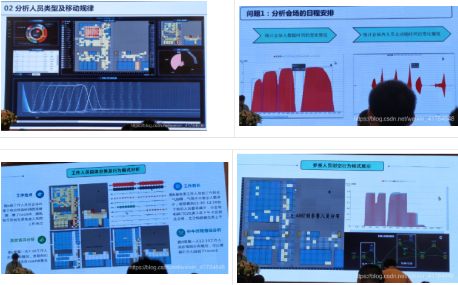
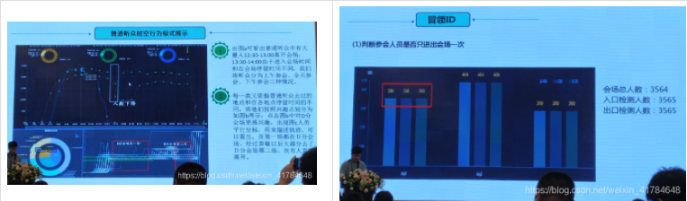
冒领ID：出入口检测不匹配
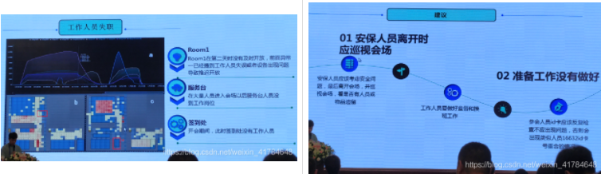
单项奖，中国铁道科学研究院集团有限公司-戚小玉（三维场景设计奖）


总结
- 对于发现的问题一定要做深入的分析不然可能与正确答案失之交臂，就比如发现某个人员瞬移及跳跃时，重庆大学发现了这个问题，我们队也发现了这个问题，但我们草草结论认为是传感器问题，而重庆大学在认真分析后得出了胸牌盗用复制的正确答案。
- 从以上获奖作品中可看出，虽然可能在做比赛时用到的技术不同，但在解决某个问题时大多获奖团队不谋而合的采用了相同的可视化图形，这说明针对解决某一问题时一个好的可视化图形是被普遍认可的，比如在解决场馆时间安排时成都理工大学、重庆大学、东北师范大学、燕山大学、中国铁道科学研究院集团等都用到了场馆人数变化折线图来确定时间安排，这也从侧面说明了针对比赛的某一问题去找到一种正确的可视化图形的重要性。所以比赛之初针对问题去寻找正确的可视化图形非常重要。